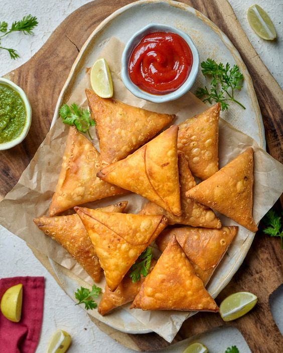
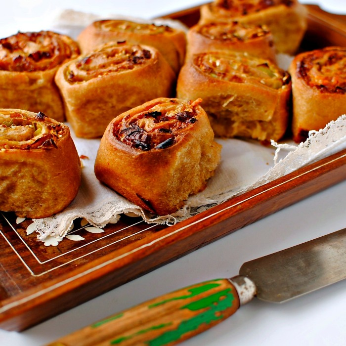

Dosa is a South Indian thin, crispy crepe made from fermented rice and
lentil batter. It's light and golden-brown, typically served with coconut chutney, sambar, and
tomato or onion chutney.
NOODLES
Noodles are long, thin strands made from unleavened dough. They can be
boiled, stir-fried, or mixed with sauces and are used in a variety of dishes globally. Noodles are a
staple food in many cultures.
BIRIYANI
Biryani is a mixed rice dish, mainly popular in South Asia. It is made
with rice, some type of meat, and spices. To cater to vegetarians, in some cases, it is prepared by
substituting vegetables for the meat.
NAAN
Naan is a leavened, oven-baked or tawa-fried flatbread. It is
characterized by its light and slightly fluffy texture and golden-brown spots from the baking
process.
INDIAN THALI
A round platter used to serve food in South Asia, Southeast Asia, and
the Caribbean. Thali is also used to refer to an Indian-style meal made up of a selection of various
dishes served on a platter.
CHAPATI
Chapati is an unleavened flatbread made of finely ground whole wheat
flour mixed into dough with water and salt, then cooked on a tava, or flat skillet. This ancient
style of bread.

SAMOSA
Arguably the most popular street food in India, samosas are fried or
baked pastry pockets with a savory filling such as spiced potatoes, onions, and peas.
CHAI
Tea is an aromatic beverage prepared by pouring hot or boiling water
over cured or fresh leaves of Camellia sinensis, an evergreen shrub native to East Asia.
CHOC CHIP PECAN PIE
Choc Chip Pecan Pie blends nutty pecans with sweet chocolate chips in
a buttery crust. It features a gooey mix of pecans, chocolate chips, and a sweet filling.
BEAVERTAILS
The BeaverTail is a fried dough pastry that is sold in a variety of
flavours. Most flavours of BeaverTails are topped with sweet condiments and confections , such as
whipped cream, banana slices, crumbled Oreos and chocolate hazelnut.

CHELSEA BUNS
The bun is made of a rich yeast dough flavoured with lemon peel,
cinnamon or mixed spice. The dough is rolled out, spread with a mixture of currants, brown sugar and
butter, then formed into a square-sided log.
EGGPLANT ADOBO
This superpunchy, one-skillet vegetarian meal is inspired by chicken
adobo, a beloved Filipino dish. Here, eggplant cooks in rich, tangy adobo sauce — a blend of soy
sauce, vinegar, garlic, black pepper and bay leaf